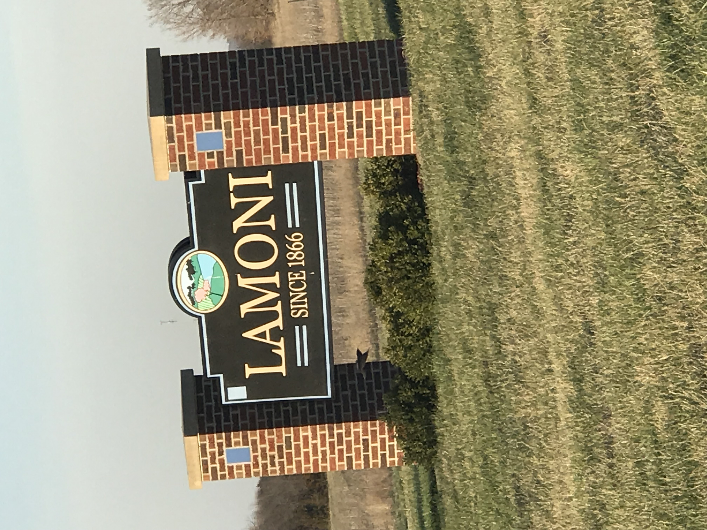

Lamoni Iowa

"The Cleveland Indians are an American professional baseball team based in Cleveland, Ohio. The Indians compete in Major League Baseball (MLB) as a member club of the American League (AL) Central division. Since 1994, they have played at Progressive Field. The team's spring training facility is at Goodyear Ballpark in Goodyear, Arizona. Since their establishment as a major league franchise in 1901, the Indians have won two World Series championships: in 1920 and 1948, along with nine Central Division titles and six American League pennants. The Indians' current World Series championship drought is the longest active drought."